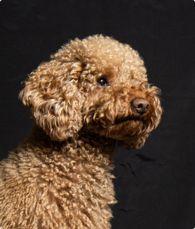
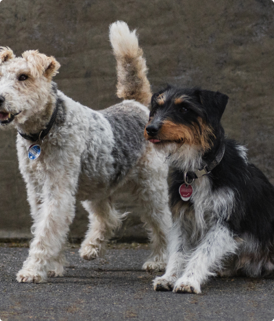

mir bei WhatsApp!
Mittun
-
HUNDEFOTOSHOOTING „CITY DOGS“
Mehr sehenZEITLOS.KLASSISCH.ELEGANT. Eine Stadt – tausende Möglichkeiten um Hunde toll ins Szene zu setzen. Die Altstadt Graz bietet zahlreiche Motive um unsere Fellnasen mal von einer ganz anderer Seite zu zeigen. Gemeinsam spazieren wir durch die Grazer Altstadt und ich lichte deine Fellnase an den unterschiedlichen Plätzen ab. Voraussetzung: dein Hund ist verträglich mit anderen Hunden und fühlt sich auch im städtischen Umfeld wohl.

-
HUNDEFOTOSHOOTING „ROSA FARBENMEER“
Mehr sehenFARBENFROH.EINZIGARTIG. Einmal im Jahr hüllt sich ein sonst eher unscheinbarer Berg in eine Meer aus pinken Blüten und bietet für Hunde die optimale Kulisse um verträumte farbenfrohe Portraits zu erstellen.
 -
MAGISCHE MOMENTE AM KRIMMLER WASSERFALL
Mehr sehenTaucht mit mir gemeinsam ein in die faszinierende Welt der Krimmler Wasserfälle und lasst uns gemeinsam unvergessliche Momente deiner Fellnase festhalten. Es sind nur begrenzte Plätze verfügbar. Sicher dir deinen Termin schon jetzt für dieses ein einzigartiges Hundefotoshooting. Voraussetzung: dein Hund hat keine Angst vor Wasser
 -
HUNDEFOTOSHOOTING „CITY DOGS“
Mehr sehenZEITLOS.KLASSISCH.ELEGANT. Eine Stadt – tausende Möglichkeiten um Hunde toll ins Szene zu setzen. Die Altstadt Graz bietet zahlreiche Motive um unsere Fellnasen mal von einer ganz anderer Seite zu zeigen. Gemeinsam spazieren wir durch die Grazer Altstadt und ich lichte deine Fellnase an den unterschiedlichen Plätzen ab. Voraussetzung: dein Hund ist verträglich mit anderen Hunden und fühlt sich auch im städtischen Umfeld wohl.
Was kostet
-
 Mehr sehen
Mehr sehenStudio
Mein Fotostudio ist wie ein zauberhaftes Theater, in dem jeder seine Rolle spielen kann! Ihre geliebten Tiere sind die Hauptdarsteller, Sie sind die begeisterten Zuschauer, oder vielleicht ist Ihnen eine Nebenrolle zugedacht. Und ich bin der Regisseur dieses Theaters. Es spielt keine Rolle, wer von uns die Handlung entworfen hat, welche Rollen wir spielen oder welches Requisit auf der Bühne steht, denn jede unserer Aufführungen verdient es, für immer in Erinnerung zu bleiben. -
 Mehr sehen
Mehr sehenMomente
Jeder Moment im Tierleben birgt eine einzigartige Geschichte. Ich fotografiere eure Tiere dort, wo sie ganz sie selbst sind – in ihrer natürlichen Umgebung. Mit einem feinen Gespür für den richtigen Moment und einem Auge für das Detail, fange ich die Einzigartigkeit und die Persönlichkeit jedes Tieres ein. Ob überraschendes Spiel im Garten oder ausgelassene Freude beim Spaziergang, ich bin bereit, eure Geschichten überallhin zu folgen. -
 Mehr sehen
Mehr sehenReportage
Jedes Event ist voll einzigartiger Momente – von Aufregung bis zu Überraschungen. Meine Mission ist es sondern die Geschichte Ihres Events zu erzählen - die Atmosphäre, die Emotionen und die vielen kleinen Details einzufangen, die zusammenkommen, um Ihre Veranstaltung unvergesslich zu machen. Mit einem aufmerksamen Blick für die besonderen Interaktionen zwischen Tieren und Menschen schaffe ich eine lebendige, emotionale Erzählung Ihres besonderen Tages.